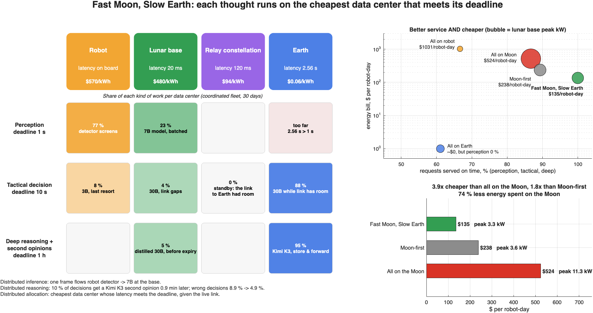
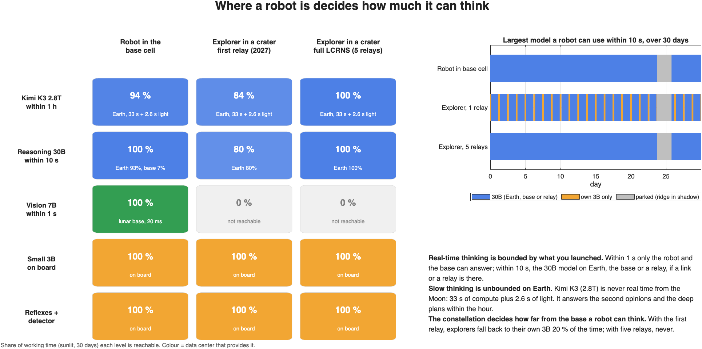

By 2035, a hundred robots work at the lunar south pole. They need AI at three speeds, and only the fastest one belongs on the Moon.
See a hazard and react. Earth is 2.56 s away, round trip.
Re-plan the next move with a 30B model.
Reason about the mission with a frontier model (Kimi K3, 2.8T).
Each thought runs on the cheapest data center whose latency meets its deadline, given the live link.
Reflexes, a frame detector and a 3B model as the last resort.
Real-time vision for robots near the base; takes tactical work when the link to Earth drops.
NASA LCRNS orbits. Carries explorers' traffic; computes for them when the link to Earth cannot.
Everything that can wait, at the cheapest of three grid sites each hour.
One request flows through several nodes: the robot's detector screens every frame, and only the changed ones reach the 7B model at the base.
77 % of frames never leave the robotThe robot acts on a fast answer from the Moon. When it is unsure, Kimi K3 on Earth gives a second opinion and corrects the plan.
wrong decisions 8.9 % → 4.9 %A scheduler sends each request to the cheapest data center that meets its deadline, given the live state of every link.
88 % of tactical decisions run on Earth
